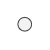

Home → Segment Dot
Segment Dot is a round interface element represented as a circle.
SegmentDot is an auxiliary class of the round interfaces library for implementing an array of dots.

Fig. 1 - Dot
The following scripts should be included in the <head> section:
To create an object, the main parameters are passed to the constructor function:
id - dot identificator as a text string.
context - CanvasRenderingContext2D for drawing a dot.
cx - X coordinate of the dot center.
cy - Y coordinate of the dot center.
r - dot radius.
Examples of using various properties and methods of the object.
gradient - fill gradient. Type of value is SegmentGradient.
Valid direction values for a Linear Gradient:
"to-left" - from right to left.
"to-right" - from left to right.
"to-bottom" - top down.
"to-top" - down up.Valid direction values for a Radial Gradient:
"from-center" - from dot center.
"to-center" - to dot center.Valid direction values for a Conic Gradient:
"clockwise".
"anticlockwise".background - fill color (applies if fill gradient is not specified).
border_width - dot border width.
border_color - dot border color.
visible - flag ensures the visibility of the object if set in true.
in_progress - flag takes the value true during the animation.
calc() - performs basic calculations of the shape and style of a dot when it is created, changed and during animation.
This method should be called after changing the properties of the object so that they take effect.draw() - draws an object.
instanceCopy() - creates an independent copy of the object.
Dot animation is various changes in the shape, position, or style of the dot over time.
Key animation parameters:
duration - animation duration. Sets in seconds.
delay - delay before the start of the animation. Sets in seconds.
direction - animation direction. Valid values depend on the type of animation.
appear(direction, duration, delay) - the appearance of a dot due to a gradual change in its shape.
Valid values for the direction:
"from-center" - from dot center.disappear(direction, duration, delay) - the disappearance of a dot due to a gradual change in its shape.
Valid values for the direction:
"to-center" - to dot center.fadeIn(duration, delay) - gradual appearance of a dot due to a change in its transparency.
fadeOut(duration, delay) - gradual disappearance of a dot due to a change in its transparency.
Events triggered by a SegmentDot are implemented using a CustomEvent.
In the detail.dot field, a link to the object itself is passed.
segment-changed - event dispatches every time the calc() method is executed.
segment-dot-appeared
segment-dot-disappeared
segment-dot-faded_in
segment-dot-faded_out
Home → Segment Dot